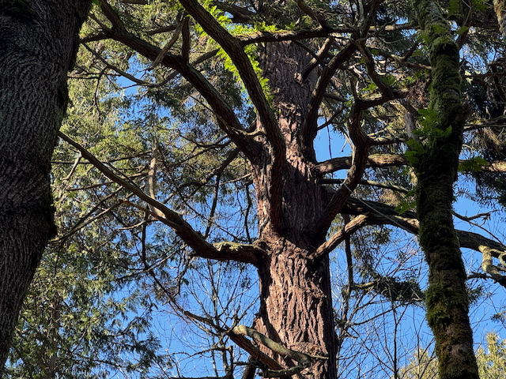

The tree is tolerant of drought. It loves rain. It is fire-adapted: depending on fire to get started, able to survive all but the most severe fires when it reaches maturity.
It can live a thousand years.
We have no typhoons, no hurricanes, so these strong trees can grow tall.
Even so, the biggest firs, like this one, often have a broken top, succumbing often enough to the more moderate storms we do have.
When that happens, apical dominance ends, and side ("epicormic") branches pop out below the crown, often growing large and tangled, reaching out for sunlight.
The severe, regional founding fire burned everything to the ground in 1508.
A more moderate regional fire burned here in 1701, destroying many species. But a cohort of 200 year-old doug firs, each with thick bark, survived. You can see burned bark on this tree, and on many others throughout the forest.
